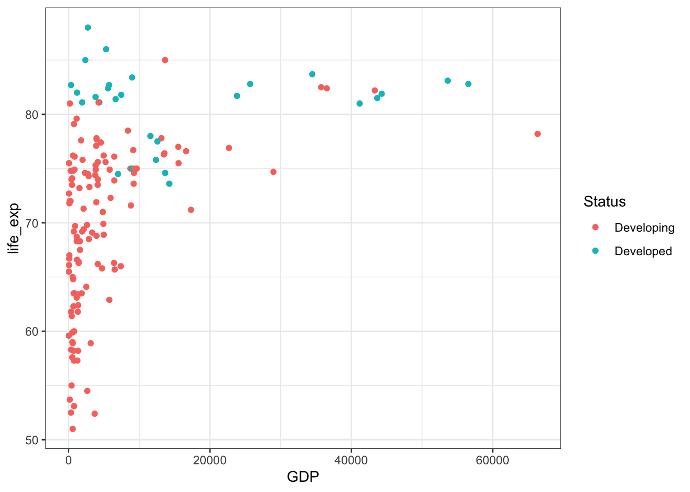

Life Expectancy
| Country | Life Expectancy |
|---|---|
| Slovenia | 88.0 |
| Denmark | 86.0 |
| Chile | 85.0 |
| Cyprus | 85.0 |
| Japan | 83.7 |
| Switzerland | 83.4 |
| Singapore | 83.1 |
| Australia | 82.8 |
| Spain | 82.8 |
| Iceland | 82.7 |
Overview of Data
Controllable Variables
Alcohol: Alcohol consumption per capita (liters of pure alcohol)pct_expend: Expenditure on health as a percentage of GDP per capitahep_b: Hepatitis B immunization rate among 1-year-olds (%)Polio: Polio immunization rate among 1-year-olds (%)tot_expend: Government expenditure on healthcare as a percentage of total government expenditureDiphtheria: Diphtheria tetnus toxoid and pertussis immunization rate among 1-year-olds (%)hiv_aids: Number of deaths of 0-4 year-olds from HIV/AIDS per 1000 live birthsSchooling: Average number of years of schooling
Uncontrollable Variables (Nuiscance Variables)
BMI: Average BMI (Body Mass Index) of entire country’s populationGDP: GDP per capitaPopulation: Total population of countrythinnes_adole: Prevalence of “thinness” among adolescents aged 10-19 (%)thinness_infant: Prevalence of “thinness” among infants aged 5-9 (%)income_comp: Human Development Index in terms of income composition of resources (0 to 1)Status: Developmental status of country (Developed or Developing)
Indicator Variables
under_five_deaths: Number of deaths of 5-year-olds or younger per 1000 peoplelife_exp: Average expectancy in country (years)adult_mortality: Number of deaths of people aged 15-60 per 1000 peopleinfant_mortality: Number of infants deaths per 1000 infants
Exploratory Data Analysis

Generally countries increased life expectancy, especially in Sub-Saharan Africa. Which countries experienced a decrease in life expectancy.
| Change in Life Expectancy | Country |
|---|---|
| -8.1 | Syrian Arab Republic |
| -5.8 | Saint Vincent and the Grenadines |
| -5.3 | Libya |
| -5.0 | Paraguay |
| -2.3 | Yemen |
| -2.0 | Romania |
| -1.1 | Iraq |
| -0.4 | Estonia |
| -0.4 | Grenada |
From 2000-2015, the nations that experienced a decrease in life expectancy are Syria, St. Vincent and the Grenandines, Libya, Paraguay, Yemen, Romania, Iraq, Estonia, and Grenada. All of these nations except for Romania are developing.
Research Question 1: Given a country is developing, what can they do to increase their Life Expectancy?
| term | estimate | p.value | significant |
|---|---|---|---|
| (Intercept) | 47.3544634 | 0.0000000 | Significant |
| Schooling | 1.4838656 | 0.0000000 | Significant |
| hiv_aids | -0.6622054 | 0.0000000 | Significant |
| tot_expend | 0.0993622 | 0.0651826 | Not Significant |
| Alcohol | -0.0807471 | 0.0420498 | Significant |
| Polio | 0.0294019 | 0.0000238 | Significant |
| Diphtheria | 0.0218701 | 0.0067412 | Significant |
| pct_expend | 0.0014132 | 0.0000000 | Significant |
| hep_b | -0.0004334 | 0.9434882 | Not Significant |
Research Question 2: For the small subset of countries that saw a decrease in life expectancy from 2000-2015, what factors led to this decrease in life expectancy?
**Lots of NA values